This vignette covers everything in manimR that draws data and mathematics on coordinates:
- number lines and their scales (linear and logarithmic);
-
Axesand the plotting and calculus tools that live on them; - the planes:
NumberPlane,PolarPlaneandComplexPlane; - function graphs that need no axes;
- bar charts and probability sample spaces;
- network graphs (vertices and edges) with their layouts and animations;
- vector fields and stream lines.
Static pictures are drawn with plot(), which shows one
frame. Animations are manim chunks (see RStudio, knitr, Quarto and Shiny):
on the website they play as videos, and in the installed vignette you
see their last frame. Number labels, axis labels and graph labels are
typeset with LaTeX through MathTex(), so those chunks only
run when LaTeX is installed (see Text and
math).
Every constructor in this vignette also has an R6 class generator
with the suffix Class (AxesClass,
ThreeDAxesClass, NumberPlaneClass,
PolarPlaneClass, ComplexPlaneClass,
NumberLineClass, UnitIntervalClass,
LinearBaseClass, LogBaseClass,
ParametricFunctionClass, FunctionGraphClass,
ImplicitFunctionClass, BarChartClass,
SampleSpaceClass, GraphClass,
DiGraphClass, VectorFieldClass,
ArrowVectorFieldClass, StreamLinesClass and so
on), to inherit from when you write your own mobjects;
CoordinateSystemClass and GenericGraphClass
are the shared base classes. The help pages are
?coordinate_systems, ?NumberLine,
?graph_scale, ?function_graphs,
?probability, ?GenericGraphClass and
?VectorFieldClass.
A note on names for readers who know Python manim: the plotting
method is ax$plot() (an R6 method, unrelated to R’s
plot() generic, which draws a mobject), the point function
of a graph is graph$func because function is a
reserved word in R, and every index (axes, colorscale axes) starts at
1.
Number lines
NumberLine() draws a line with ticks. Its range is
x_range = c(min, max, step); the step sets the tick
spacing. Give the drawn length with length or the distance
between consecutive integers with unit_size.
plain <- NumberLine(x_range = c(-5, 5, 1), length = 10)
fine <- NumberLine(
x_range = c(-5, 5, 0.5), length = 10, color = BLUE,
numbers_with_elongated_ticks = -5:5, longer_tick_multiple = 2.5,
include_tip = TRUE, tip_width = 0.2, tip_height = 0.2
)
tilted <- NumberLine(x_range = c(0, 4, 1), unit_size = 1.2, rotation = 20 * DEGREES,
stroke_width = 4, tick_size = 0.2, color = YELLOW)
plot(VGroup(plain, fine, tilted)$arrange(DOWN, buff = 0.8))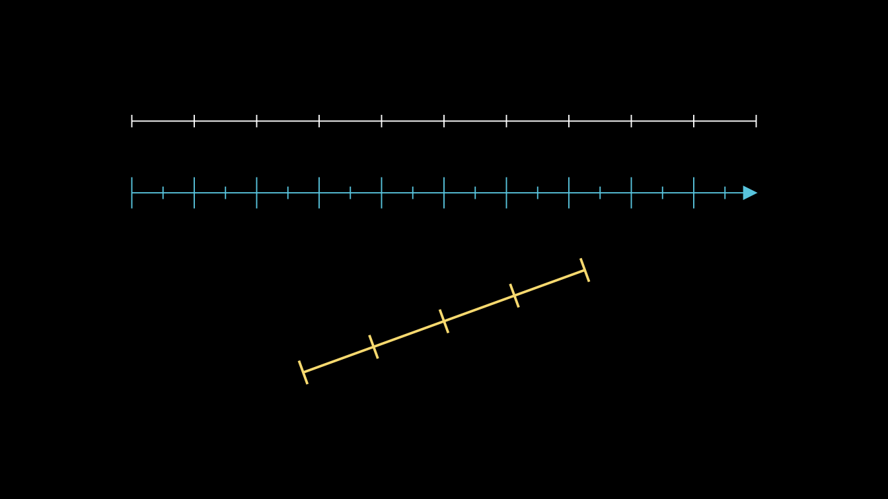
The arguments shown: numbers_with_elongated_ticks
(values whose ticks are longer_tick_multiple times longer),
include_tip, tick_size (half the tick length),
rotation (radians), stroke_width and
color (passed on to the underlying Line()).
exclude_origin_tick = TRUE leaves out the tick at zero and
include_ticks = FALSE all of them.
Numbers on the line
include_numbers = TRUE labels every tick. The labels are
DecimalNumber()s whose number of decimal places follows the
step, so a step of 0.25 gives two decimals.
numbers_to_exclude, numbers_to_include,
font_size, label_direction,
line_to_number_buff and decimal_number_config
control them:
integers <- NumberLine(x_range = c(-3, 3, 1), length = 9, include_numbers = TRUE,
numbers_to_exclude = 0)
quarters <- NumberLine(x_range = c(0, 1, 0.25), length = 9, include_numbers = TRUE,
label_direction = UP, font_size = 30, color = TEAL)
percent <- NumberLine(x_range = c(0, 100, 25), length = 9, include_numbers = TRUE,
decimal_number_config = list(num_decimal_places = 0, unit = "\\%"))
plot(VGroup(integers, quarters, percent)$arrange(DOWN, buff = 1))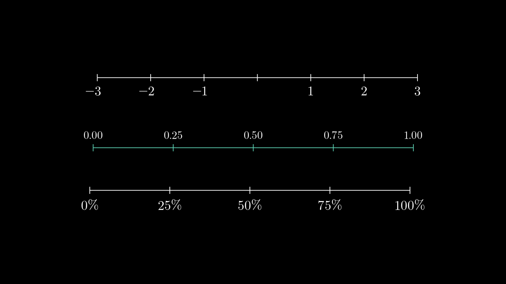
Labels can also be added after the fact. add_numbers()
labels chosen values, get_number_mobject() returns a single
label (without adding it), and add_labels() puts arbitrary
text at named positions; character labels are typeset with
Tex(), and any mobject is used as it is:
line <- NumberLine(x_range = c(0, 10, 1), length = 10)
line$add_numbers(x_values = c(0, 5, 10), font_size = 32)
line$add_labels(list("2" = "start", "8" = Text("end", font_size = 28, color = RED)),
direction = UP)
seven <- line$get_number_mobject(7, direction = DOWN, font_size = 48)$set_color(YELLOW)
plot(VGroup(line, seven))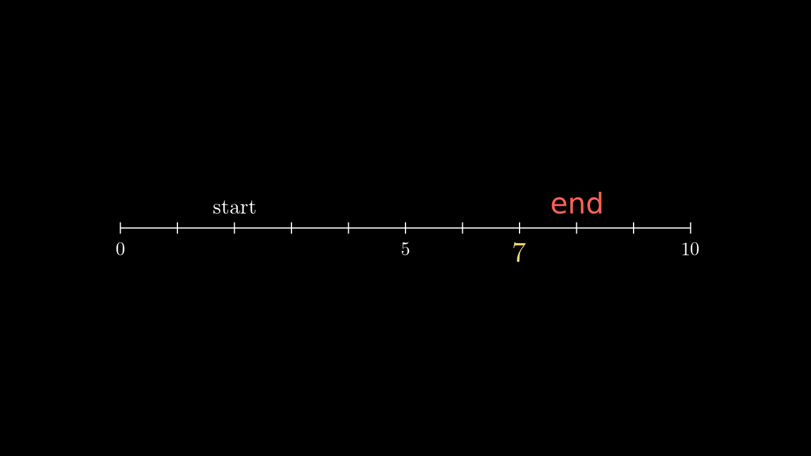
From numbers to points and back
number_to_point() (alias n2p()) gives the
scene point of a value and point_to_number() (alias
p2n()) goes the other way. A vector of values gives a
matrix with one point per row.
line <- NumberLine(x_range = c(-5, 5, 1), length = 10)
line$n2p(2)
#> [1] 2 0 0
line$n2p(c(-1, 0, 1))
#> [,1] [,2] [,3]
#> [1,] -1 0 0
#> [2,] 0 0 0
#> [3,] 1 0 0
line$p2n(c(-2.5, 0, 0))
#> [1] -2.5
line$get_tick_range()
#> [1] -5 -4 -3 -2 -1 0 1 2 3 4 5
line$get_unit_size()
#> [1] 1rotate_about_number(number, angle) turns the line about
one of its values and rotate_about_zero(angle) about 0.
get_tick_marks() returns the ticks,
get_tick(x) builds one more, get_unit_vector()
is the vector from one integer to the next, and
get_number_mobjects(...) (or get_labels() for
every tick) builds labels without adding them.
The animation below moves a pointer along a line with a
ValueTracker():
NumberLinePointer <- R6::R6Class("NumberLinePointer", inherit = Scene,
public = list(construct = function() {
line <- NumberLine(x_range = c(-4, 4, 1), length = 11, include_numbers = TRUE)
x <- ValueTracker(-3)
pointer <- Vector(0.8 * DOWN, color = YELLOW)
pointer$add_updater(function(m) m$next_to(line$n2p(x$get_value()), UP, buff = 0.1))
self$add(line, pointer)
self$play(x$animate$set_value(2.5), run_time = 2)
self$play(x$animate$set_value(PI), run_time = 1)
})
)Scales: LinearBase() and LogBase()
How values map to positions is decided by a scale object, given as
scaling. LinearBase(scale_factor) is the
default (a straight multiple); LogBase(base) makes a
logarithmic line. With a logarithmic scale x_range is given
in exponents: c(0, 4, 1) runs from 10^0 to 10^4 with a tick
at each power.
LinearBase(scale_factor = 2)$func(3)
#> [1] 6
LinearBase(scale_factor = 2)$inverse_function(6)
#> [1] 3
LogBase()$func(3)
#> [1] 1000
LogBase()$inverse_function(1000)
#> [1] 3
LogBase(base = 2)$func(5)
#> [1] 32The scale method is called func() because upstream’s
name, function, is a reserved word in R. With
custom_labels = TRUE (the default for
LogBase()) the labels are powers such as 10^2, built by
get_custom_labels().
UnitInterval() is a ready made line from 0 to 1 with
ticks every 0.1, ten units long, with elongated ticks at both ends.
unit <- UnitInterval(include_numbers = TRUE, font_size = 24)
logline <- NumberLine(x_range = c(0, 4, 1), length = 10, scaling = LogBase(),
include_numbers = TRUE, font_size = 30)
marker <- Dot(logline$n2p(300), color = RED)
plot(VGroup(unit, VGroup(logline, marker))$arrange(DOWN, buff = 1.2))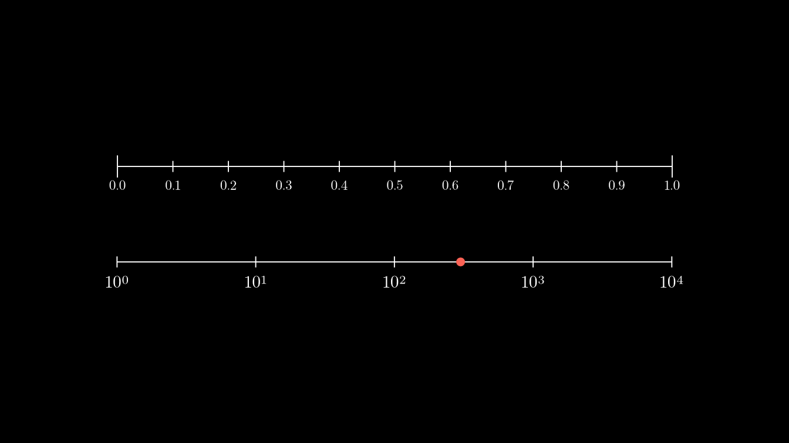
The red dot marks 300 on the logarithmic line, between 10^2 and 10^3.
Axes
Axes() puts an x and a y NumberLine()
together, crossing where both coordinates are 0 (or at the end of a
range that excludes 0). The main arguments:
-
x_range,y_range:c(min, max, step)of each axis; -
x_length,y_length: the drawn lengths (by default nearly the whole frame); -
axis_config: a list ofNumberLine()arguments for both axes, andx_axis_config,y_axis_configfor one of them; -
tips: whether the axes end in arrow tips.
ax <- Axes(x_range = c(-3, 3, 1), y_range = c(-2, 2, 1), x_length = 9, y_length = 5.5,
axis_config = list(color = GREY_B), y_axis_config = list(include_tip = FALSE))
p <- ax$c2p(2, 1)
plot(VGroup(ax, ax$get_lines_to_point(p), Dot(p, color = YELLOW)))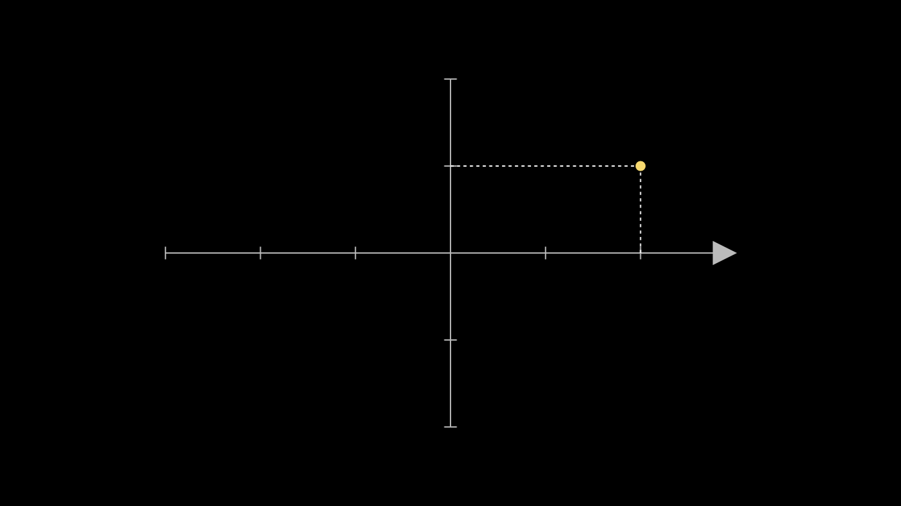
coords_to_point() (alias c2p()) turns
coordinates into a scene point and point_to_coords() (alias
p2c()) does the reverse. Like upstream, c2p()
of two vectors returns coordinate rows (a 3 x n matrix), and
c2p() of a matrix with one coordinate pair per row returns
one point per row.
ax$c2p(2, 1)
#> [1] 3.000 1.375 0.000
ax$p2c(ax$c2p(2, 1))
#> [1] 2 1
ax$c2p(c(0, 1, 2), c(0, 1, 1.5))
#> [,1] [,2] [,3]
#> [1,] 0 1.500 3.0000
#> [2,] 0 1.375 2.0625
#> [3,] 0 0.000 0.0000
ax$c2p(rbind(c(0, 0), c(1, 1)))
#> [,1] [,2] [,3]
#> [1,] 0.0 0.000 0
#> [2,] 1.5 1.375 0
ax$get_origin()
#> [1] 0 0 0
c(ax$get_x_unit_size(), ax$get_y_unit_size())
#> [1] 1.500 1.375get_x_axis(), get_y_axis() and
get_axis(i) return the NumberLines
(get_axes() returns all of them as a group), so everything
from the previous section works on them, for example
ax$get_x_axis()$n2p(1).
polar_to_point(r, theta) (alias pr2pt()) and
point_to_polar() (pt2pr()) work with polar
coordinates on any coordinate system.
Plotting functions: sine and cosine
ax$plot(f) draws y = f(x) over the x range
of the axes, or over the x_range you give. This is
upstream’s classic example, with numbers on the x axis, axis labels,
graph labels and a vertical line at x = 2π:
axes <- Axes(
x_range = c(-10, 10.3, 1), y_range = c(-1.5, 1.5, 1), x_length = 10,
axis_config = list(color = GREEN),
x_axis_config = list(numbers_to_include = seq(-10, 10, 2),
numbers_with_elongated_ticks = seq(-10, 10, 2)),
tips = FALSE
)
axes_labels <- axes$get_axis_labels()
sin_graph <- axes$plot(sin, color = BLUE)
cos_graph <- axes$plot(cos, color = RED)
sin_label <- axes$get_graph_label(sin_graph, "\\sin(x)", x_val = -10, direction = UP / 2)
cos_label <- axes$get_graph_label(cos_graph, label = "\\cos(x)")
vert_line <- axes$get_vertical_line(axes$i2gp(TAU, cos_graph), color = YELLOW, line_func = Line)
line_label <- axes$get_graph_label(cos_graph, "x=2\\pi", x_val = TAU, direction = UR, color = WHITE)
plot(VGroup(axes, sin_graph, cos_graph, vert_line, axes_labels, sin_label, cos_label, line_label))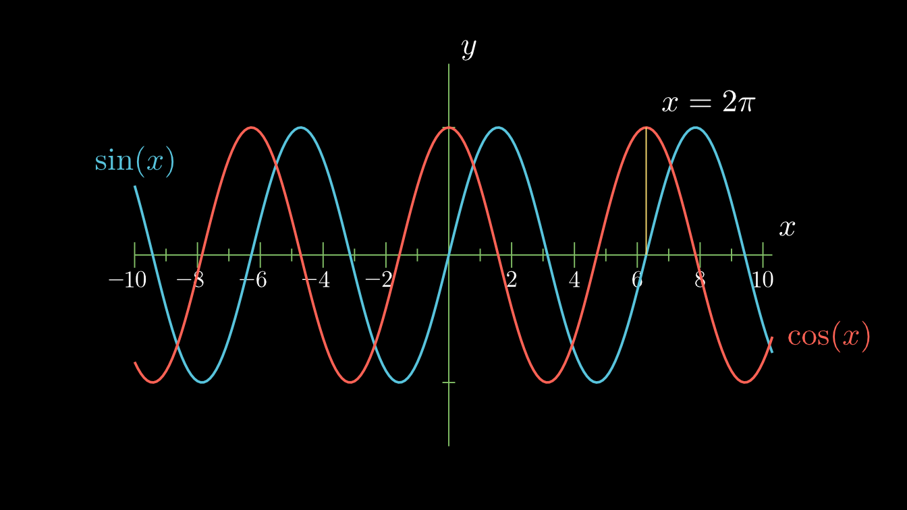
-
get_axis_labels(x_label = "x", y_label = "y")labels both axes at their ends;get_x_axis_label()andget_y_axis_label()place one label, withedge,directionandbuffto move it. A string is typeset withMathTex(); any mobject, for example aText(), is used as it is.get_axis_label(label, axis, edge, direction)is the general form for any axis. -
get_graph_label(graph, label, x_val, direction, buff, color, dot)puts a label next to the graph atx_val(by default near the right end), and withdot = TRUEadds a dot on the graph. -
input_to_graph_point(x, graph)(aliasi2gp()) is the scene point of the graph abovex.
add_coordinates() labels the ticks of every axis. Give
it vectors to label only some values, or a named vector to use your own
labels:
ax <- Axes(x_range = c(0, 6, 1), y_range = c(0, 4, 1), x_length = 9, y_length = 5, tips = FALSE)
ax$add_coordinates(1:5, c(2, 4))
labels <- ax$get_axis_labels(x_label = Text("time", font_size = 30), y_label = "v(t)")
plot(VGroup(ax, labels, ax$plot(function(t) 4 * t / (1 + t), color = YELLOW)))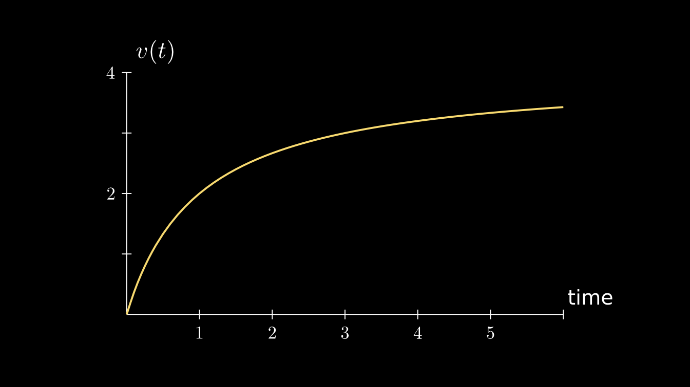
Plot options
ax$plot() takes
-
x_range = c(min, max, step): the domain and the sampling step (by default a tenth of the tick step); -
discontinuitiesanddt: values where the curve is broken, and how far on each side to stop; -
use_smoothing: smooth the sampled points into Bezier curves (TRUE); -
use_vectorized = TRUE: callfonce with all x values (faster for vectorized R functions); -
colorscaleandcolorscale_axis: color the graph by its y (axis 2) or x (axis 1) values; - style arguments such as
colorandstroke_width.
ax <- Axes(x_range = c(-4, 4, 1), y_range = c(-4, 4, 1), x_length = 7, y_length = 7)$scale(0.95)
hyperbola <- ax$plot(function(x) 1 / x, x_range = c(-4, 4, 0.01),
discontinuities = 0, dt = 0.25, color = RED)
cubic <- ax$plot(function(x) x^3 / 4 - x, x_range = c(-2.9, 2.9),
colorscale = c(BLUE, GREEN, YELLOW, ORANGE), use_vectorized = TRUE,
stroke_width = 6)
plot(VGroup(ax, hyperbola, cubic))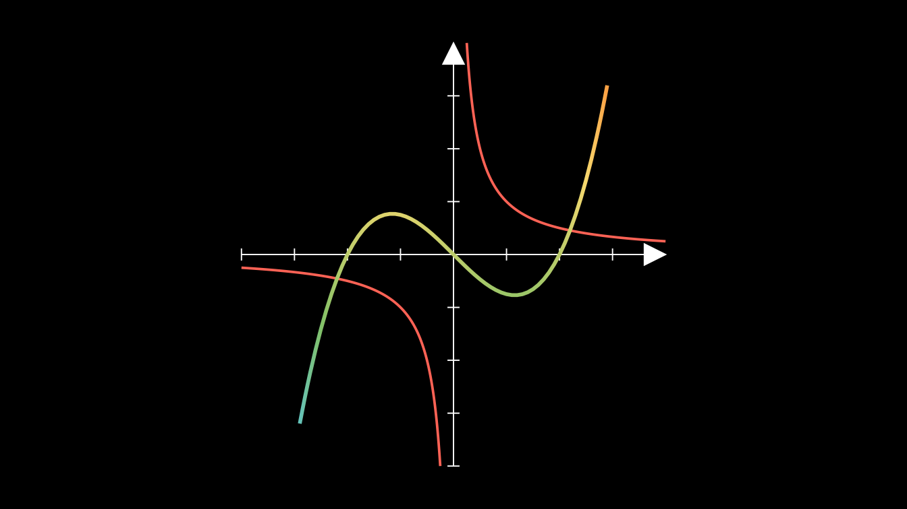
Parametric, implicit and polar curves
plot_parametric_curve(f, t_range) draws
t -> c(x(t), y(t)) in the axes’ coordinates,
plot_implicit_curve(f) draws the curve
f(x, y) = 0, and
plot_polar_graph(r, theta_range) draws
r(theta) (best on a PolarPlane, shown further
down).
left <- Axes(x_range = c(-4, 4, 1), y_range = c(-4, 4, 1), x_length = 6, y_length = 6)
right <- left$copy()
VGroup(left, right)$arrange(RIGHT, buff = 1)
lemniscate <- left$plot_implicit_curve(function(x, y) (x^2 + y^2)^2 - 8 * (x^2 - y^2), color = BLUE)
lissajous <- right$plot_parametric_curve(function(t) c(3 * sin(2 * t), 3 * cos(3 * t)),
t_range = c(0, TAU, 0.01), color = ORANGE)
spiral <- right$plot_polar_graph(function(th) th / 3, theta_range = c(0, 3 * PI), color = PINK)
plot(VGroup(left, lemniscate, right, lissajous, spiral))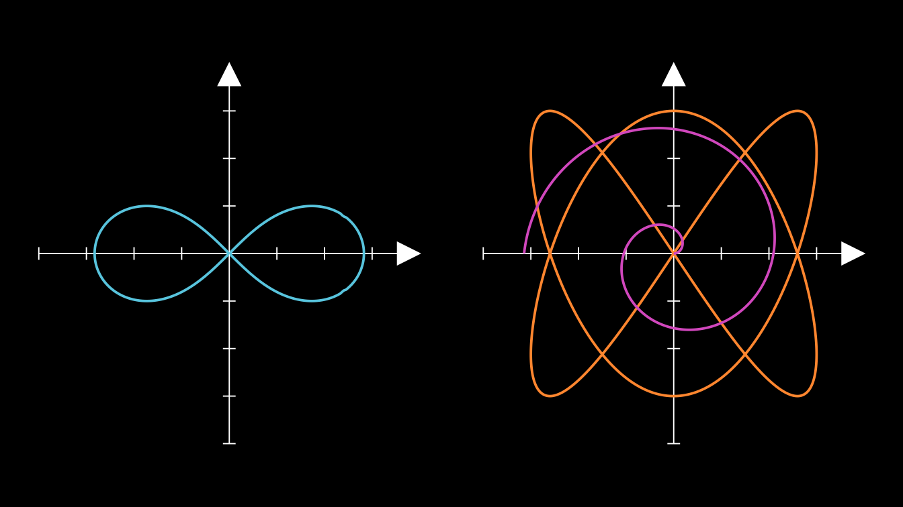
Note that the curves are created after the axes are moved: a graph is
computed from the axes’ position at the time you call
plot().
Line graphs
plot_line_graph(x_values, y_values) joins data points
with straight segments and returns a VDict with the entries
"line_graph" and "vertex_dots". This is
upstream’s heat diagram:
ax <- Axes(x_range = c(0, 40, 5), y_range = c(-8, 32, 5), x_length = 9, y_length = 6,
x_axis_config = list(numbers_to_include = seq(0, 35, 5)),
y_axis_config = list(numbers_to_include = seq(-5, 30, 5)), tips = FALSE)
labels <- ax$get_axis_labels(x_label = Tex("$\\Delta Q$"), y_label = Tex("T[$^\\circ C$]"))
graph <- ax$plot_line_graph(x_values = c(0, 8, 38, 39), y_values = c(20, 0, 0, -5),
line_color = GOLD, vertex_dot_style = list(color = RED))
plot(VGroup(ax, labels, graph))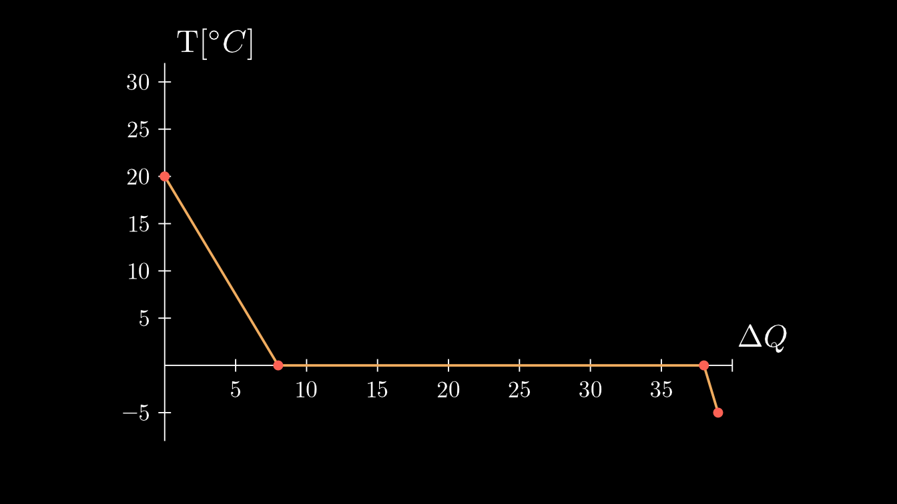
Areas and Riemann sums
get_area(graph, x_range) fills the region between a
graph and the x axis, or between two graphs with
bounded_graph.
get_riemann_rectangles(graph, x_range, dx) approximates the
area with rectangles; input_sample_type
("left", "right" or "center")
picks where each rectangle meets the graph, color is a
gradient across the rectangles, show_signed_area inverts
the color of rectangles below the axis, and bounded_graph
measures from a second graph. get_vertical_line(point)
drops a dashed line from a point to the x axis.
ax <- Axes(x_range = c(0, 5), y_range = c(0, 6),
x_axis_config = list(numbers_to_include = c(2, 3)), tips = FALSE)
labels <- ax$get_axis_labels()
curve_1 <- ax$plot(function(x) 4 * x - x^2, x_range = c(0, 4), color = BLUE_C)
curve_2 <- ax$plot(function(x) 0.8 * x^2 - 3 * x + 4, x_range = c(0, 4), color = GREEN_B)
line_1 <- ax$get_vertical_line(ax$input_to_graph_point(2, curve_1), color = YELLOW)
line_2 <- ax$get_vertical_line(ax$i2gp(3, curve_1), color = YELLOW)
riemann_area <- ax$get_riemann_rectangles(curve_1, x_range = c(0.3, 0.6), dx = 0.03,
color = BLUE, fill_opacity = 0.5)
area <- ax$get_area(curve_2, c(2, 3), bounded_graph = curve_1, color = GREY, opacity = 0.5)
plot(VGroup(ax, labels, curve_1, curve_2, line_1, line_2, riemann_area, area))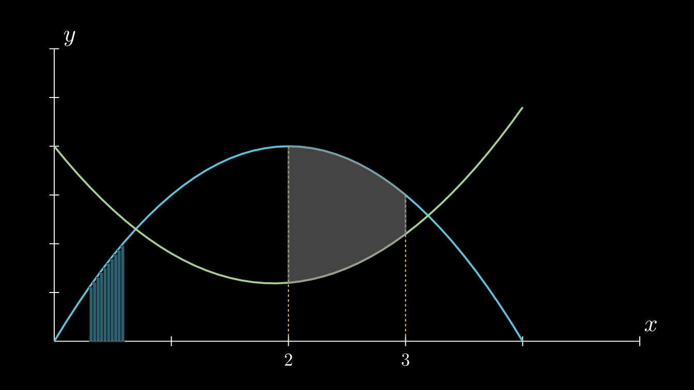
The classic Riemann sum animation refines the rectangles until they become the area under the curve:
RiemannSum <- R6::R6Class("RiemannSum", inherit = Scene,
public = list(construct = function() {
ax <- Axes(x_range = c(0, 5, 1), y_range = c(0, 5, 1), x_length = 9, y_length = 6, tips = FALSE)
f <- ax$plot(function(x) 0.2 * (x - 1) * (x - 3) * (x - 4.5) + 2.5, x_range = c(0.2, 5), color = YELLOW)
rects <- lapply(c(0.5, 0.25, 0.1), function(dx) {
ax$get_riemann_rectangles(f, x_range = c(0.5, 4.5), dx = dx, input_sample_type = "center",
color = c(BLUE, TEAL, GREEN), fill_opacity = 0.7, stroke_width = 0.5)
})
area <- ax$get_area(f, x_range = c(0.5, 4.5), color = c(BLUE, GREEN), opacity = 0.7)
self$add(ax)
self$play(Create(f), run_time = 1)
self$play(Create(rects[[1]]), run_time = 1)
for (k in 2:3) self$play(Transform(rects[[1]], rects[[k]]), run_time = 0.8)
self$play(FadeOut(rects[[1]]), FadeIn(area), run_time = 0.8)
})
)Values on graphs
A few methods compute numbers rather than mobjects:
ax <- Axes(x_range = c(-3, 3, 1), y_range = c(-1, 9, 1))
parabola <- ax$plot(function(x) x^2)
ax$input_to_graph_coords(2, parabola) # alias i2gc()
#> [1] 2 4
ax$p2c(ax$i2gp(2, parabola))
#> [1] 2 4
ax$slope_of_tangent(2, parabola)
#> [1] 4
ax$angle_of_tangent(2, parabola) / DEGREES
#> [1] 75.96376
parabola$underlying_function(3)
#> [1] 9slope_of_tangent() and angle_of_tangent()
are measured in the axes’ coordinates.
graph$underlying_function is the function you plotted,
while graph$func maps a value to a scene point.
Lines to graphs, T labels and secants
ax <- Axes(x_range = c(0, 6, 1), y_range = c(0, 4, 1), x_length = 10, y_length = 6, tips = FALSE)
g <- ax$plot(function(x) 2 + sin(x), color = BLUE)
fan <- ax$get_vertical_lines_to_graph(g, x_range = c(0.5, 2.5), num_lines = 9, color = TEAL)
t_label <- ax$get_T_label(x_val = 4, graph = g, triangle_color = YELLOW, line_color = YELLOW)
h_line <- ax$get_horizontal_line(ax$i2gp(5, g), color = RED)
v_line <- ax$get_vertical_line(ax$i2gp(5, g), line_func = Line, color = RED)
plot(VGroup(ax, g, fan, t_label, h_line, v_line))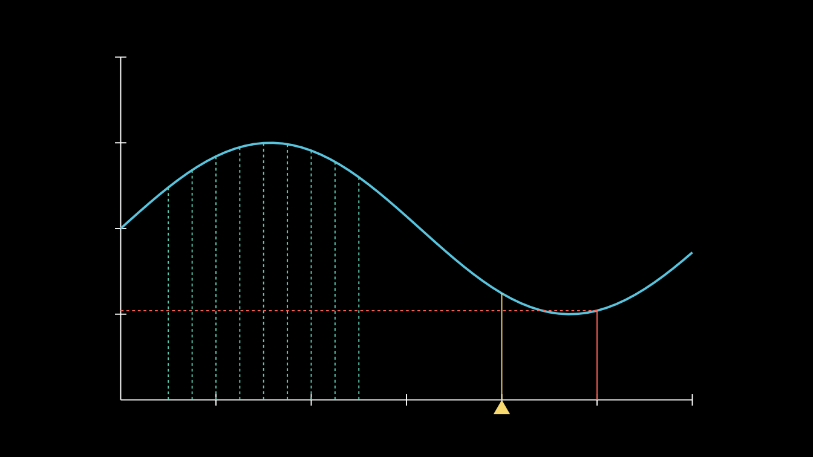
get_vertical_line(), get_horizontal_line()
and get_lines_to_point() (all built on
get_line_from_axis_to_point(index, point)) draw dashed
lines by default; line_func = Line gives solid ones, and
color, stroke_width and
line_config style them.
get_vertical_lines_to_graph() draws num_lines
evenly spaced lines and get_T_label() a triangle marker
with an optional label under it.
get_secant_slope_group(x, graph, dx) builds the classic
picture of a secant: the dx and dy legs,
optional labels, and the secant line.
ax <- Axes(x_range = c(0, 4, 1), y_range = c(0, 7, 1), x_length = 8, y_length = 6, tips = FALSE)
f <- ax$plot(function(x) 0.4 * x^2 + 0.5, color = BLUE)
secant <- ax$get_secant_slope_group(x = 1.5, graph = f, dx = 1.5, dx_label = "dx", dy_label = "dy",
secant_line_length = 6, secant_line_color = YELLOW)
plot(VGroup(ax, f, secant))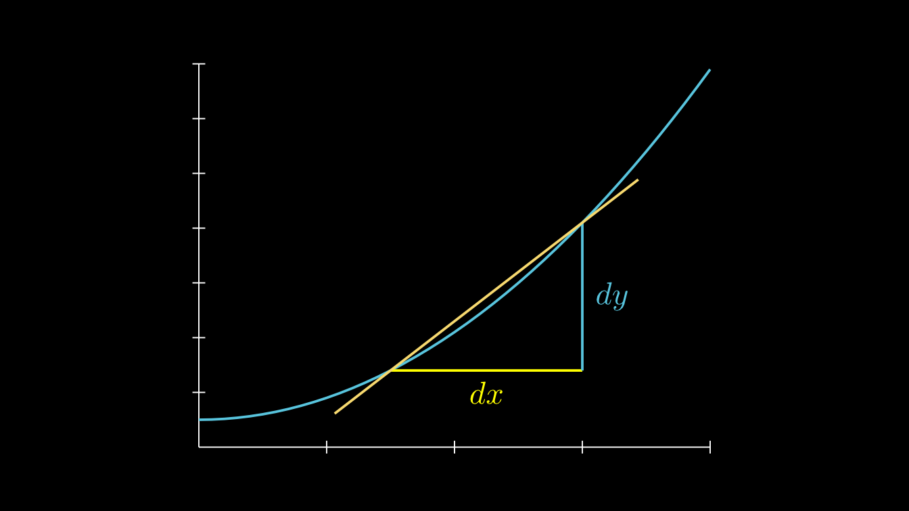
Shrinking dx turns the secant into the tangent. An
updater made with always_redraw() rebuilds the group every
frame:
SecantToTangent <- R6::R6Class("SecantToTangent", inherit = Scene,
public = list(construct = function() {
ax <- Axes(x_range = c(0, 4, 1), y_range = c(0, 7, 1), x_length = 8, y_length = 6, tips = FALSE)
f <- ax$plot(function(x) 0.4 * x^2 + 0.5, color = BLUE)
dx <- ValueTracker(2)
secant <- always_redraw(function() {
ax$get_secant_slope_group(x = 1.5, graph = f, dx = dx$get_value(),
secant_line_length = 6, secant_line_color = YELLOW)
})
self$add(ax, f, secant)
self$play(dx$animate$set_value(0.01), run_time = 2)
})
)A moving tangent line and the derivative
plot_derivative_graph(graph) plots the slope of a graph
and plot_antiderivative_graph(graph, y_intercept) its
integral (computed numerically). In this animation a tangent line slides
along a curve while a dot traces the derivative: the dot’s height is
always the tangent’s slope. The axes use one unit per coordinate in both
directions, so slopes on the screen equal slopes in coordinates.
MovingTangent <- R6::R6Class("MovingTangent", inherit = Scene,
public = list(construct = function() {
ax <- Axes(x_range = c(-5, 5, 1), y_range = c(-3, 3, 1), x_length = 10, y_length = 6)
f <- ax$plot(function(x) sin(x) + 0.3 * x, color = BLUE)
df <- ax$plot_derivative_graph(f, color = GREEN)
x <- ValueTracker(-4)
tangent <- always_redraw(function() {
Line(LEFT, RIGHT, color = YELLOW)$set_length(3)$
rotate(ax$angle_of_tangent(x$get_value(), f))$
move_to(ax$i2gp(x$get_value(), f))
})
on_f <- always_redraw(function() Dot(ax$i2gp(x$get_value(), f), color = YELLOW))
on_df <- always_redraw(function() Dot(ax$i2gp(x$get_value(), df), color = GREEN))
self$add(ax, f, df, tangent, on_f, on_df)
self$play(x$animate$set_value(4), run_time = 3, rate_func = linear)
})
)Both helpers return ordinary graphs, so labels and areas work on them too:
ax <- Axes(x_range = c(0, 6.5, 1), y_range = c(-1.5, 3, 1), x_length = 10, y_length = 6, tips = FALSE)
f <- ax$plot(sin, x_range = c(0, 6.5), color = BLUE)
df <- ax$plot_derivative_graph(f, color = GREEN)
big_f <- ax$plot_antiderivative_graph(f, y_intercept = 0, color = ORANGE)
labels <- VGroup(
ax$get_graph_label(f, "f(x) = \\sin x", x_val = 4.5, direction = DOWN),
ax$get_graph_label(df, "f'(x)", x_val = 5.2, direction = UP),
ax$get_graph_label(big_f, "F(x)", x_val = 2.6, direction = UL, dot = TRUE)
)
plot(VGroup(ax, f, df, big_f, labels))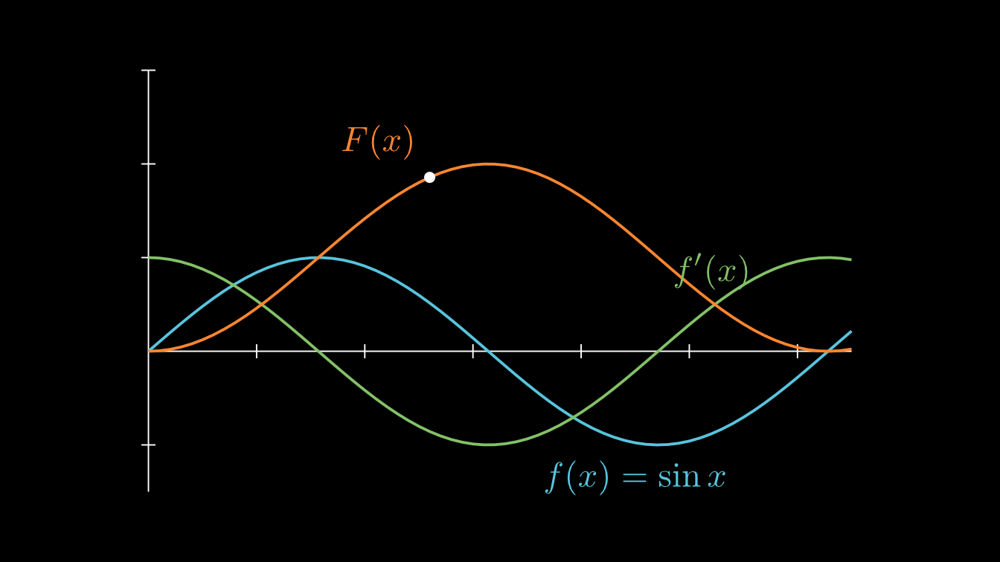
Planes
NumberPlane
NumberPlane() is an Axes with a grid. By
default it covers the whole frame with one unit per square.
background_line_style styles the grid lines and
faded_line_ratio adds fainter lines between them (2 means
one faint line per cell). get_vector(coords) draws an arrow
from the origin.
plane <- NumberPlane(
x_range = c(-7, 7, 1), y_range = c(-4, 4, 1),
background_line_style = list(stroke_color = TEAL, stroke_width = 2, stroke_opacity = 0.6),
faded_line_ratio = 2
)
v <- plane$get_vector(c(3, 2), color = YELLOW)
w <- plane$get_vector(c(-2, 1), color = RED)
plot(VGroup(plane, v, w))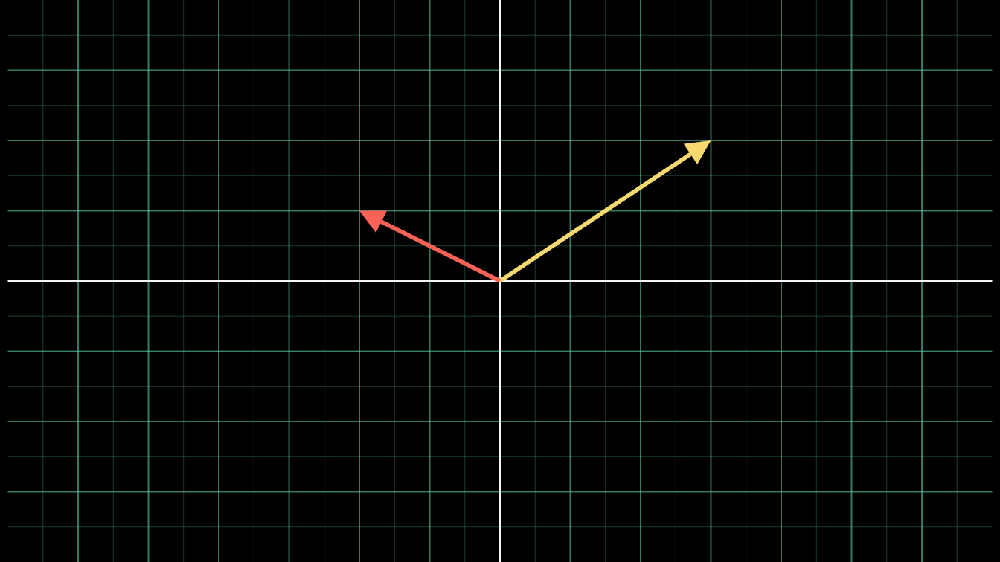
The grid lines are in plane$background_lines and
plane$faded_lines.
A plane can be bent by any function of points. Straight lines only
have two anchors, so call prepare_for_nonlinear_transform()
first to give them enough points to curve smoothly:
PolarPlane
PolarPlane() draws circles and rays.
radius_max and radius_step set the circles,
size the diameter on screen, azimuth_step the
number of rays, and azimuth_units the angle labels:
"PI radians", "TAU radians",
"degrees", "gradians" or NULL
(plain fractions of a turn). azimuth_compact_fraction,
azimuth_offset, azimuth_direction
("CCW" or "CW"),
azimuth_label_buff and azimuth_label_font_size
fine tune the labels. add_coordinates() writes them;
get_coordinate_labels() returns them without adding, and
get_radian_label(number) builds one angle label.
radians <- PolarPlane(radius_max = 2, size = 5, azimuth_units = "PI radians", azimuth_step = 8)
radians$add_coordinates()
degrees <- PolarPlane(radius_max = 2, size = 5, azimuth_units = "degrees", azimuth_step = 12,
azimuth_direction = "CW", radius_config = list(font_size = 20))
degrees$add_coordinates()
rose <- radians$plot_polar_graph(function(th) 2 * sin(3 * th), theta_range = c(0, PI), color = PINK)
plot(VGroup(VGroup(radians, rose), degrees)$arrange(RIGHT, buff = 1.5))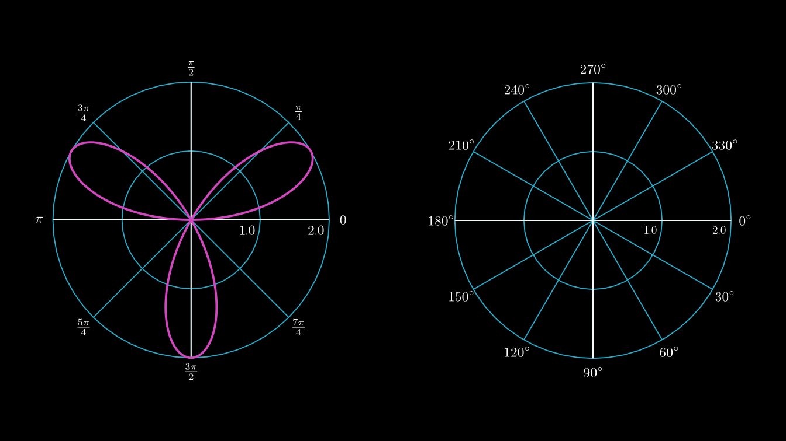
plane$pr2pt(r, theta) turns polar coordinates into a
scene point:
plane <- PolarPlane(radius_max = 3)
plane$pr2pt(2, PI / 2)
#> [1] 1.224647e-16 2.000000e+00 0.000000e+00
plane$pt2pr(c(0, 2, 0))
#> [1] 2.000000 1.570796ComplexPlane
ComplexPlane() is a NumberPlane addressed
by complex numbers: n2p() takes a complex number and
p2n() returns one. Its add_coordinates() takes
complex numbers and labels the imaginary axis with an i;
without arguments it labels
get_default_coordinate_values(), and
get_coordinate_labels() returns the labels without adding
them.
plane <- ComplexPlane(x_range = c(-4, 4, 1), y_range = c(-3, 3, 1), x_length = 8, y_length = 6)
plane$add_coordinates(-3:3, complex(imaginary = c(-2, -1, 1, 2)))
z <- complex(real = 1.5, imaginary = 0.5)
dots <- VGroup(Dot(plane$n2p(z), color = YELLOW), Dot(plane$n2p(z^2), color = RED))
labels <- VGroup(MathTex("z")$next_to(dots[1], UR, buff = 0.1),
MathTex("z^2")$next_to(dots[2], UR, buff = 0.1))
plot(VGroup(plane, dots, labels))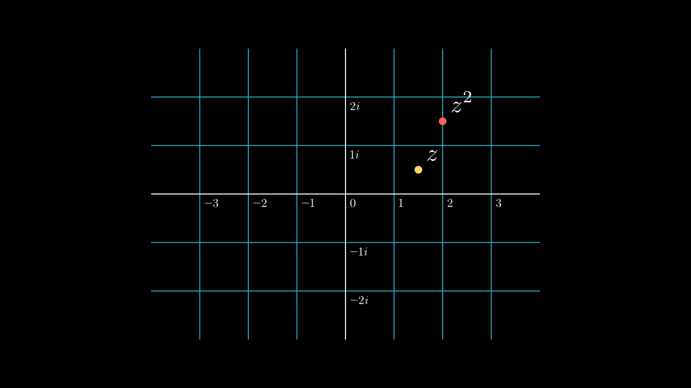
plane <- ComplexPlane()
plane$n2p(complex(real = 2, imaginary = 1))
#> [1] 2 1 0
plane$p2n(c(-1, 3, 0))
#> [1] -1+3iApplyComplexFunction(f, mobject) animates any mobject
through a complex function: every point x + iy moves to
f(x + iy). Here a grid is squared:
ComplexSquare <- R6::R6Class("ComplexSquare", inherit = Scene,
public = list(construct = function() {
plane <- ComplexPlane(x_range = c(-2, 2, 0.5), y_range = c(-2, 2, 0.5), x_length = 4, y_length = 4,
background_line_style = list(stroke_color = BLUE, stroke_width = 2))
plane$prepare_for_nonlinear_transform()
self$add(plane)
self$play(ApplyComplexFunction(function(z) z^2 / 2, plane), run_time = 2)
})
)The mobject method apply_complex_function() does the
same without animation. It works in scene coordinates, which are the
complex coordinates when the plane is centered with one unit per
step:
plane <- ComplexPlane(x_range = c(-7, 7, 1), y_range = c(-4, 4, 1))
circle <- Circle(radius = 1, color = YELLOW)
image <- circle$copy()$apply_complex_function(exp)$set_color(RED)
plot(VGroup(plane, circle, image))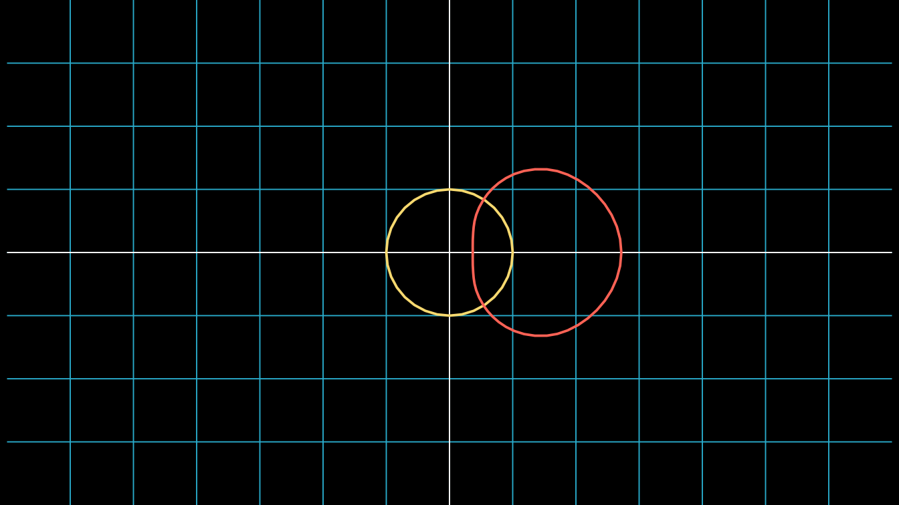
ThreeDAxes
ThreeDAxes() adds a z axis, with z_range,
z_length and z_axis_config;
get_z_axis() returns it and get_z_axis_label()
labels it. Every plotting method above works in 3D (with a third
coordinate where it makes sense), and plot_surface() draws
z = f(x, y). They need a ThreeDScene to be
viewed from an angle, so they are covered in Cameras and 3D scenes. A quick taste, a
helix drawn with plot_parametric_curve():
Helix <- R6::R6Class("Helix", inherit = ThreeDScene,
public = list(construct = function() {
axes <- ThreeDAxes(x_range = c(-3, 3, 1), y_range = c(-3, 3, 1), z_range = c(0, 4, 1),
x_length = 6, y_length = 6, z_length = 4)
helix <- axes$plot_parametric_curve(function(t) c(2 * cos(t), 2 * sin(t), t / 4),
t_range = c(0, 4 * PI, 0.05), color = YELLOW)
self$set_camera_orientation(phi = 70 * DEGREES, theta = -50 * DEGREES, zoom = 0.8,
frame_center = c(0, 0, 1.5))
self$add(axes)
self$play(Create(helix), run_time = 2)
})
)Function graphs without axes
Three mobjects draw curves directly in scene coordinates:
-
ParametricFunction(func, t_range):func(t)returnsc(x, y)orc(x, y, z);t_range = c(min, max, step). Withuse_vectorized = TRUEthe function receives alltvalues at once and returns coordinate rows, such asrbind(x, y, z).discontinuities,dt,use_smoothingandscalingwork as forax$plot(). -
FunctionGraph(f, x_range):y = f(x), by default across the whole frame. -
ImplicitFunction(f, x_range, y_range): the curvef(x, y) = 0.min_depthandmax_quadsset the sampling resolution.
lissajous <- ParametricFunction(function(t) c(2 * sin(2 * t), 1.6 * sin(3 * t), 0),
t_range = c(0, TAU, 0.01), color = ORANGE)
spiral <- ParametricFunction(function(t) rbind(t / 10 * cos(t), t / 10 * sin(t), 0),
t_range = c(0, 6 * PI, 0.05), use_vectorized = TRUE, color = TEAL)
heart <- ImplicitFunction(function(x, y) (x^2 + y^2 - 1)^3 - x^2 * y^3,
x_range = c(-1.5, 1.5), y_range = c(-1.5, 1.5), color = RED)$scale(1.6)
VGroup(lissajous, spiral, heart)$arrange(RIGHT, buff = 0.8)$shift(0.8 * UP)
wave <- FunctionGraph(function(x) 0.4 * cos(2 * x), x_range = c(-7, 7), color = BLUE)$shift(2.9 * DOWN)
plot(VGroup(lissajous, spiral, heart, wave))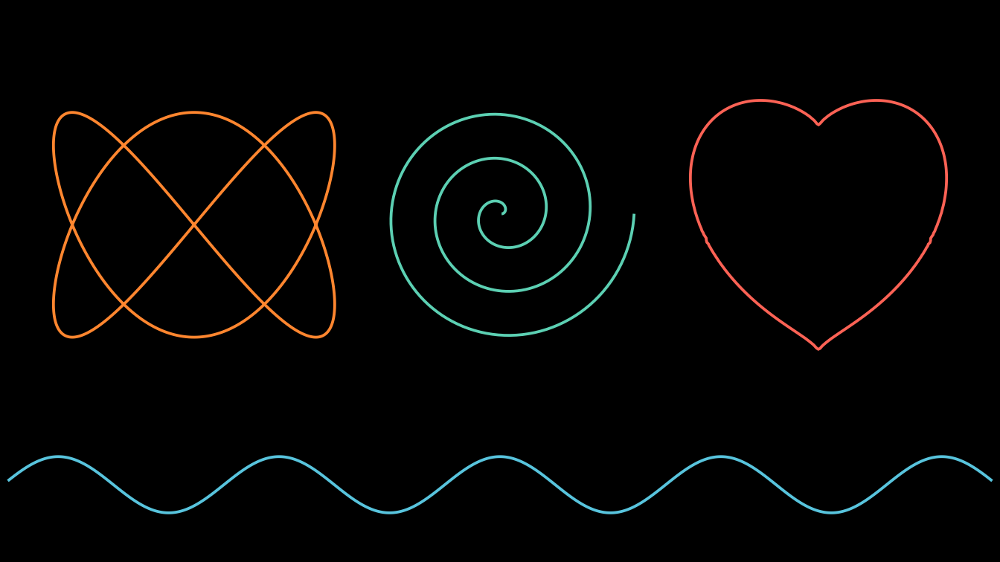
The function of a graph stays available: get_function()
returns the function you gave, and graph$func (or
get_point_from_function(t)) the point function.
wave$get_function()(0)
#> [1] 0.4
lissajous$func(PI / 4)
#> [1] 2.000000 1.131371 0.000000
c(lissajous$t_min, lissajous$t_max)
#> [1] 0.000000 6.283185Bar charts
BarChart(values, bar_names) is an Axes with
one bar per value. The y range is computed from the values unless you
give y_range. bar_colors is a gradient spread
across the bars, and bar_width,
bar_fill_opacity and bar_stroke_width style
them. get_bar_labels() returns the values as labels above
(or below) the bars. This is upstream’s example:
chart <- BarChart(
values = c(-5, 40, -10, 20, -3),
bar_names = c("one", "two", "three", "four", "five"),
y_range = c(-20, 50, 10), y_length = 6, x_length = 10,
x_axis_config = list(font_size = 36)
)
bar_labels <- chart$get_bar_labels(font_size = 48)
plot(VGroup(chart, bar_labels))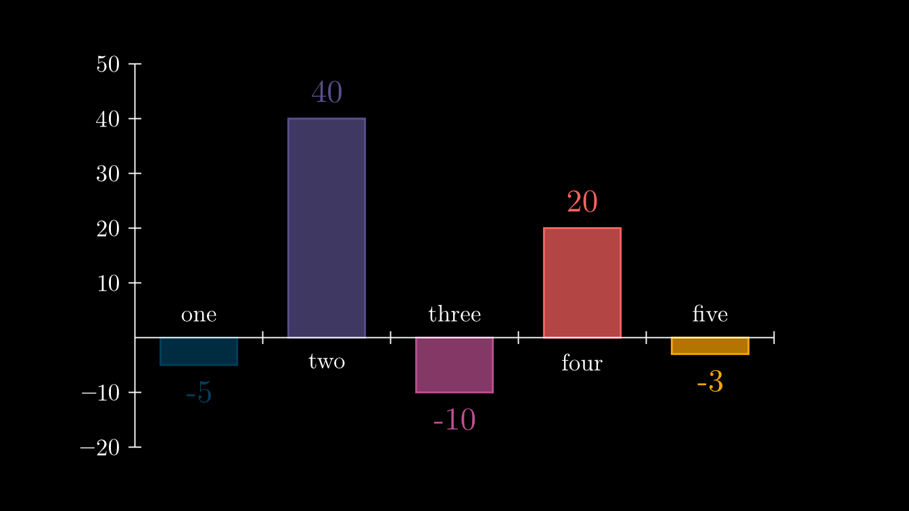
The bars are in chart$bars.
change_bar_values() resizes them (and
update_colors() reapplies the gradient), and through
$animate the change is animated:
BarChartChange <- R6::R6Class("BarChartChange", inherit = Scene,
public = list(construct = function() {
chart <- BarChart(c(3, 5, 2, 6), bar_names = c("A", "B", "C", "D"),
y_range = c(0, 8, 2), y_length = 5, x_length = 8)
self$add(chart)
self$play(chart$animate$change_bar_values(c(6, 2, 7, 3)), run_time = 1.5)
self$play(chart$bars[1]$animate$set_color(YELLOW), run_time = 0.5)
})
)Sample spaces
SampleSpace() is a rectangle for drawing probabilities
as areas. divide_horizontally(p_list) and
divide_vertically(p_list) split it into parts proportional
to the probabilities (a missing last part is added so they sum to 1, see
complete_p_list()), and space[i] returns part
i, which is itself a SampleSpace and can be
divided again. get_horizontal_division() and
get_vertical_division() return the parts without adding
them, and add_title() writes a title above the space.
get_side_braces_and_labels(),
get_top_braces_and_labels() and
get_bottom_braces_and_labels() make braces with labels for
the parts of a division, and add_braces_and_labels() adds
them all to the space:
space <- SampleSpace(width = 6, height = 4)
space$divide_horizontally(0.3, colors = c(GREEN_E, BLUE_E))
lower <- space[2]
lower$divide_vertically(0.6, colors = c(MAROON_B, YELLOW))
space$add_title("Sample space")
side <- space$get_side_braces_and_labels(c("P(A)", "P(\\bar{A})"))
bottom <- lower$get_bottom_braces_and_labels(c("P(B|\\bar{A})", "P(\\bar{B}|\\bar{A})"))
plot(VGroup(space, side, bottom)$move_to(ORIGIN))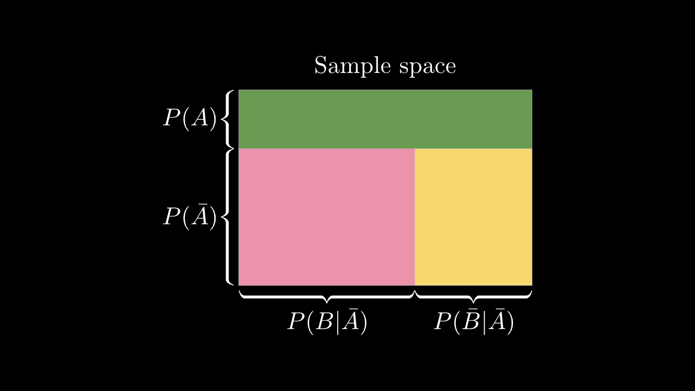
Network graphs
Graph(vertices, edges) draws a graph in the sense of
graph theory: vertices (by default Dot()s) joined by edges
(by default Line()s). DiGraph() draws a
directed graph with arrows. Vertices are named by strings (numbers are
converted), edges are pairs of names given as a list or a two column
matrix. manimR computes the layouts itself (they are ports of the
networkx layouts), so no graph package is needed.
Layouts
layout is one of the names below, a named list of
positions, or a function function(graph, scale, ...)
returning such a list. layout_scale is the half width of
the layout and layout_config passes extra settings to
it.
| Layout | Notes |
|---|---|
"spring" |
Force directed (Fruchterman and Reingold). Random start: give
layout_config = list(seed = 1) for a reproducible picture.
pos gives starting positions and fixed the
vertices that keep them, center shifts the result, and
dim = 3 lays the graph out in 3D. |
"circular" |
Vertices on a circle. |
"kamada_kawai" |
Places vertices so that their distances match path lengths. Optional
dist. |
"planar" |
A drawing without crossings; fails for graphs that are not planar. |
"random" |
Uniform random positions; takes seed. |
"shell" |
Concentric circles given by nlist, a list of vertex
groups. |
"spectral" |
Eigenvectors of the graph Laplacian. |
"spiral" |
A spiral; resolution and equidistant. |
"tree" |
Needs a tree and root_vertex; optional
vertex_spacing and orientation. |
"partite" |
Columns given by partitions;
align = "horizontal" for rows. |
The same binary tree in every layout:
vertices <- 1:7
edges <- list(c(1, 2), c(1, 3), c(2, 4), c(2, 5), c(3, 6), c(3, 7))
configs <- list(
spring = list(seed = 1), circular = list(), kamada_kawai = list(), planar = list(),
random = list(seed = 2), shell = list(nlist = list(1, 2:3, 4:7)), spectral = list(),
spiral = list(), tree = list(root_vertex = 1), partite = list(partitions = list(1, 2:3, 4:7))
)
panels <- lapply(names(configs), function(layout) {
g <- Graph(vertices, edges, layout = layout, layout_scale = 1, layout_config = configs[[layout]],
vertex_config = list(radius = 0.07), edge_config = list(stroke_width = 2))
VGroup(g, Text(layout, font_size = 22)$next_to(g, DOWN, buff = 0.25))
})
plot(VGroup(panels)$arrange_in_grid(rows = 2, buff = c(0.6, 0.5)))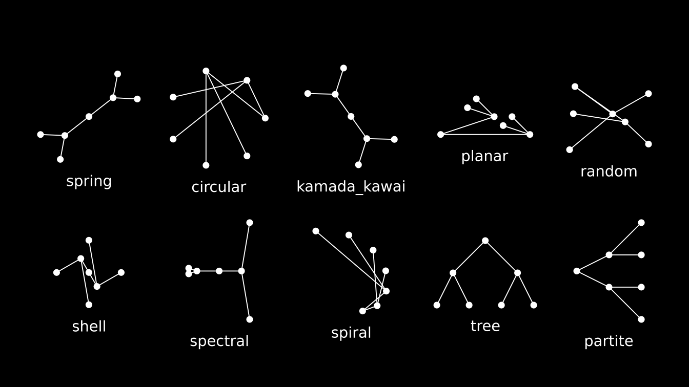
root_vertex and partitions can also be
given directly to Graph().
Graphs from igraph
If your network lives in an igraph object,
GraphClass$from_igraph(g, ...) and
DiGraphClass$from_igraph(g, ...) build a Graph
or DiGraph with its vertices (by name, when they have
names) and edges; the other arguments go to the constructor. This is the
R counterpart of upstream’s Graph.from_networkx(). Here is
Zachary’s karate club network, which comes with igraph:
karate <- igraph::make_graph("Zachary")
club <- GraphClass$from_igraph(karate, layout = "kamada_kawai", layout_scale = 3.5,
vertex_config = list(radius = 0.1, fill_color = TEAL),
edge_config = list(stroke_width = 1.5, stroke_opacity = 0.6))
club$get(1)$set_color(YELLOW)
club$get(34)$set_color(RED)
plot(club)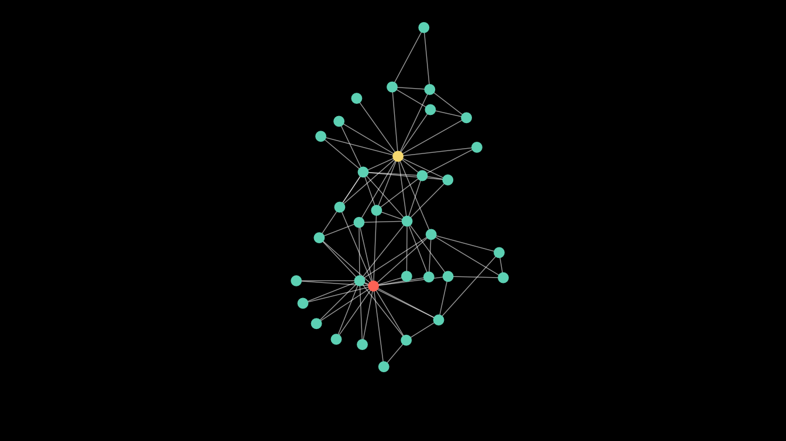
club
#> Undirected graph on 34 vertices and 78 edgesVertex and edge styles, labels and custom positions
vertex_config is a list of arguments for the vertex
constructor; an entry named after a vertex replaces the defaults for
that vertex only. edge_config works the same way for edges,
with entries named "u-v". labels = TRUE writes
the vertex names on the vertices with MathTex() (the
vertices become LabeledDot()s); a named list of mobjects
gives your own labels. vertex_type and
edge_type choose other mobjects, for example
vertex_type = Square.
ids <- c("a", "b", "c", "d")
text_labels <- setNames(lapply(ids, function(v) Text(v, font_size = 30, color = BLACK)), ids)
g <- Graph(
ids, list(c("a", "b"), c("b", "c"), c("c", "d"), c("d", "a"), c("a", "c")),
layout = list(a = c(-2, 1.5, 0), b = c(2, 1.5, 0), c = c(2, -1.5, 0), d = c(-2, -1.5, 0)),
labels = text_labels,
vertex_config = list(fill_color = BLUE_B, d = list(fill_color = RED_B)),
edge_config = list(stroke_width = 4, "a-c" = list(color = YELLOW, stroke_width = 8))
)$shift(3.5 * LEFT)
dg <- DiGraph(
1:4, list(c(1, 2), c(2, 3), c(3, 4), c(4, 1), c(1, 3)),
layout = "circular", layout_scale = 2,
vertex_type = Square, vertex_config = list(side_length = 0.5, fill_opacity = 1, fill_color = TEAL),
edge_config = list(tip_config = list(tip_length = 0.25, tip_width = 0.25),
"1-3" = list(color = ORANGE))
)$shift(3.5 * RIGHT)
plot(VGroup(g, dg))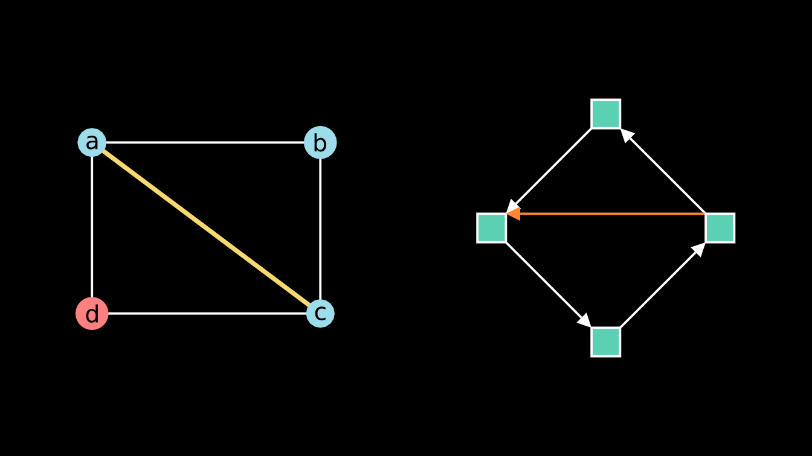
g
#> Undirected graph on 4 vertices and 5 edgesLook up a vertex with g$get("a") (or
g$vertices[["a"]]) and an edge with
g$get(c("a", "c")). vertex_ids(),
neighbors(v) and is_tree() answer questions
about the structure. Moving a vertex drags its edges along, because the
graph keeps them attached with an updater.
Changing a graph
add_vertices(), remove_vertices(),
add_edges() and remove_edges() change the
graph (remove_vertex(), add_edge() and
remove_edge() handle one at a time), and
change_layout() moves the vertices to a new layout. Through
$animate each of them is animated: new vertices and edges
are drawn with Create(), removed ones with
Uncreate(), and the layout change moves the vertices
smoothly. Pass animation settings with
g$animate(run_time = 2)$..., or another animation with
g$animate(animation = FadeIn)$....
GraphChanges <- R6::R6Class("GraphChanges", inherit = Scene,
public = list(construct = function() {
g <- Graph(1:4, list(c(1, 2), c(2, 3), c(3, 4)), layout = "circular", layout_scale = 2,
vertex_config = list(radius = 0.15))
self$play(Create(g), run_time = 1)
self$play(g$animate$add_vertices(5, 6, positions = list("5" = c(-4, 0, 0), "6" = c(4, 0, 0))),
run_time = 0.8)
self$play(g$animate$add_edges(c(4, 5), c(5, 6), c(6, 1)), run_time = 0.8)
self$play(g$animate$change_layout("circular", layout_scale = 2.5), run_time = 1)
self$play(g$get(1)$animate$shift(1.5 * RIGHT), run_time = 0.8)
self$play(g$animate$remove_edges(c(6, 1)), run_time = 0.8)
self$play(g$animate(animation = FadeOut)$remove_vertices(3), run_time = 0.8)
})
)Vector fields
A vector field is a function from a position c(x, y, z)
to a vector. ArrowVectorField() draws it as a grid of
arrows and StreamLines() as the paths of particles flowing
through it. Unless color is given, the vectors are colored
by their length mapped onto the gradient colors (by default
DEFAULT_SCALAR_FIELD_COLORS) between
min_color_scheme_value and
max_color_scheme_value; color_scheme replaces
the length by any function of the vector.
DEFAULT_SCALAR_FIELD_COLORS
#> [1] "#236B8E" "#83C167" "#F7D96F" "#FC6255"The methods eval_func(pos),
pos_to_color(pos) and pos_to_rgb(pos) of any
field return the vector at a position and its color.
Arrow fields
x_range and y_range
(c(min, max, step)) set the grid of arrows,
length_func maps each vector’s length to the drawn length
(by default lengths are squashed below 0.45 so arrows do not overlap),
opacity fades them, and vector_config is
passed to each Vector(). On the left the default coloring,
on the right a single color and arrows of a fixed length:
func <- function(p) sin(p[2] / 2) * RIGHT + cos(p[1] / 2) * UP
colored <- ArrowVectorField(func, x_range = c(-6.75, -0.75, 0.75), y_range = c(-3, 3, 0.75),
min_color_scheme_value = 0.5, max_color_scheme_value = 1.4,
colors = c(BLUE, GREEN, YELLOW, RED))
fixed <- ArrowVectorField(func, x_range = c(0.75, 6.75, 0.75), y_range = c(-3, 3, 0.75),
color = YELLOW, length_func = function(norm) 0.4)
plot(VGroup(colored, fixed))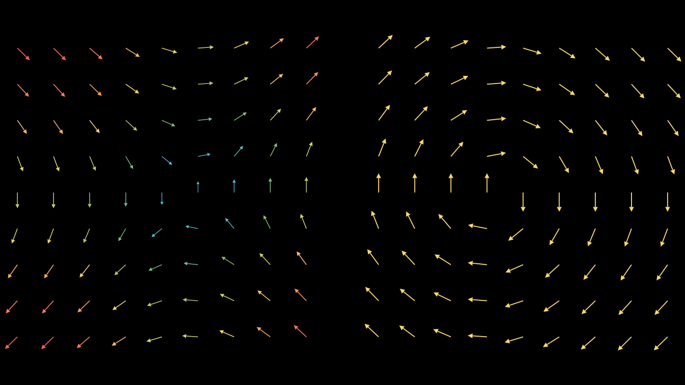
Moving mobjects along a field
nudge(mob, dt, substeps, pointwise) moves a mobject
along the field for a time dt (by its center, or every
point separately with pointwise = TRUE, which deforms it).
get_nudge_updater(speed, pointwise) returns an updater that
does this every frame. This is upstream’s nudging example: the circle
and the dot are first nudged two seconds backwards, then flow forwards
through their starting position (the gray circle) and beyond.
Nudging <- R6::R6Class("Nudging", inherit = Scene,
public = list(construct = function() {
func <- function(p) sin(p[2] / 2) * RIGHT + cos(p[1] / 2) * UP
field <- ArrowVectorField(func, x_range = c(-7, 7, 1), y_range = c(-4, 4, 1),
length_func = function(x) x / 2)
self$add(field)
circle <- Circle(radius = 2)$shift(LEFT)
self$add(circle$copy()$set_color(GREY))
dot <- Dot()$move_to(circle)
field$nudge(circle, -2, 60, TRUE)
field$nudge(dot, -2, 60)
circle$add_updater(field$get_nudge_updater(pointwise = TRUE))
dot$add_updater(field$get_nudge_updater())
self$add(circle, dot)
self$wait(3)
})
)VectorField() is the base class: a field with no arrows
of its own. Give it submobjects and
start_submobject_movement() keeps them flowing until
stop_submobject_movement();
nudge_submobjects(dt) moves them once.
FloatingDots <- R6::R6Class("FloatingDots", inherit = Scene,
public = list(construct = function() {
func <- function(p) c(-p[2], p[1], 0) / 2
self$add(ArrowVectorField(func, x_range = c(-7, 7, 1), y_range = c(-4, 4, 1), opacity = 0.4))
flow <- VectorField(func)
for (r in 1:3) flow$add(Dot(r * RIGHT, color = YELLOW, radius = 0.12))
self$add(flow)
flow$start_submobject_movement(speed = 1)
self$wait(2)
flow$stop_submobject_movement()
})
)Stream lines
StreamLines(func) starts a particle near every grid
point (randomly jittered by noise_factor, with
n_repeats particles per point) and follows it for
virtual_time in steps of dt.
max_anchors_per_line, padding (how far
particles may leave the grid) and stroke_width shape the
lines. A stream line field is animated in one of two ways:
-
self$play(stream_lines$create())draws the lines once, in random order; -
stream_lines$start_animation(warm_up, flow_speed, time_width, rate_func, line_animation_class)makes light flow along them continuously while the scene waits, andself$play(stream_lines$end_animation())ends the flow smoothly with every line fully drawn.
The single lines are StreamLineClass objects in
stream_lines$stream_lines.
ContinuousMotion <- R6::R6Class("ContinuousMotion", inherit = Scene,
public = list(construct = function() {
func <- function(p) sin(p[1] / 2) * UR + cos(p[2] / 2) * LEFT
stream_lines <- StreamLines(func, x_range = c(-7, 7, 1.4), y_range = c(-4, 4, 1.4),
stroke_width = 3, max_anchors_per_line = 30)
self$add(stream_lines)
stream_lines$start_animation(warm_up = FALSE, flow_speed = 1.5)
self$wait(1)
self$play(stream_lines$end_animation())
})
)Field helpers
vector_field_shift_func(func, shift_vector) and
vector_field_scale_func(func, scalar) return a moved or
rescaled copy of a field function (the methods
field$shift_func() and field$scale_func() do
the same). fit_to_coordinate_system(axes) moves a field
built in coordinates onto a coordinate system:
swirl <- function(p) c(-p[2], p[1], 0)
moved <- vector_field_shift_func(swirl, shift_vector = 2 * RIGHT)
moved(c(2, 1, 0)) # the swirl now turns around (2, 0)
#> [1] -1 0 0
finer <- vector_field_scale_func(swirl, scalar = 0.5)
finer(c(2, 2, 0))
#> [1] -1 1 0
plane <- NumberPlane(x_range = c(-3, 3, 1), y_range = c(-2, 2, 1), x_length = 9, y_length = 6)
field <- ArrowVectorField(swirl, x_range = c(-2.5, 2.5, 0.5), y_range = c(-1.5, 1.5, 0.5),
length_func = function(n) 0.25)
field$fit_to_coordinate_system(plane)
plot(VGroup(plane, field))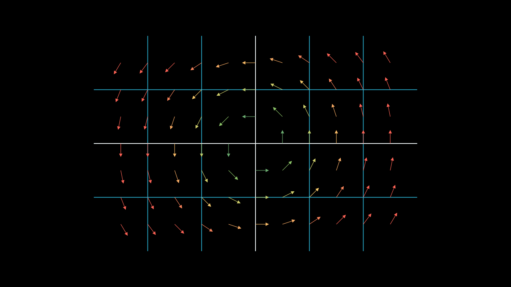
get_colored_background_image(sampling_rate) samples the
field’s colors over the whole frame and returns an RGB array (rows from
top to bottom), for example to draw with as.raster(); a
larger sampling_rate samples fewer pixels.
get_vectorized_rgba_gradient_function(start, end, colors)
returns a function that maps values to RGBA rows along a gradient.
field <- VectorField(function(p) c(p[2], -p[1], 0) / 3)
img <- field$get_colored_background_image(sampling_rate = 40)
dim(img)
#> [1] 27 48 3
op <- par(mar = c(0, 0, 0, 0))
plot(as.raster(img))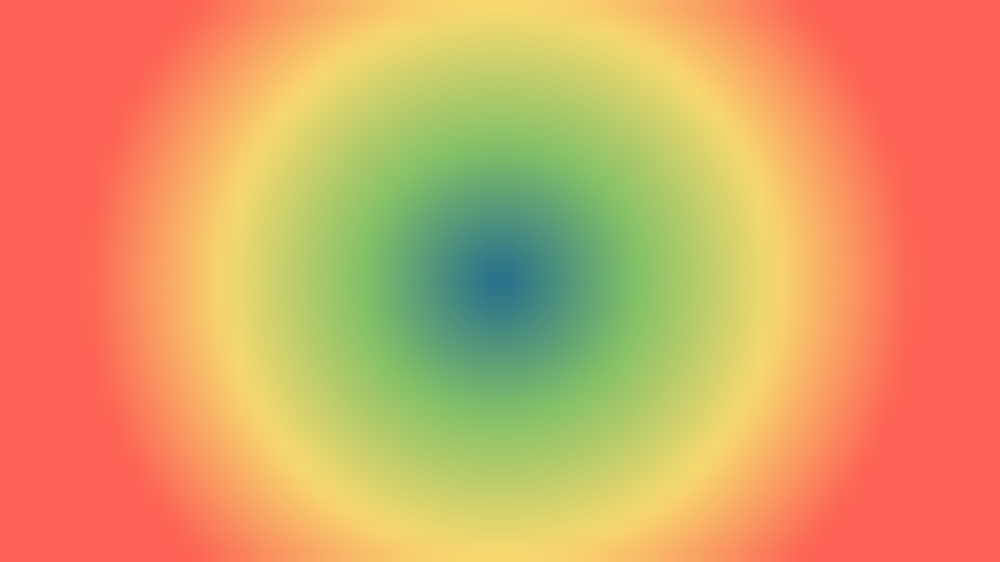